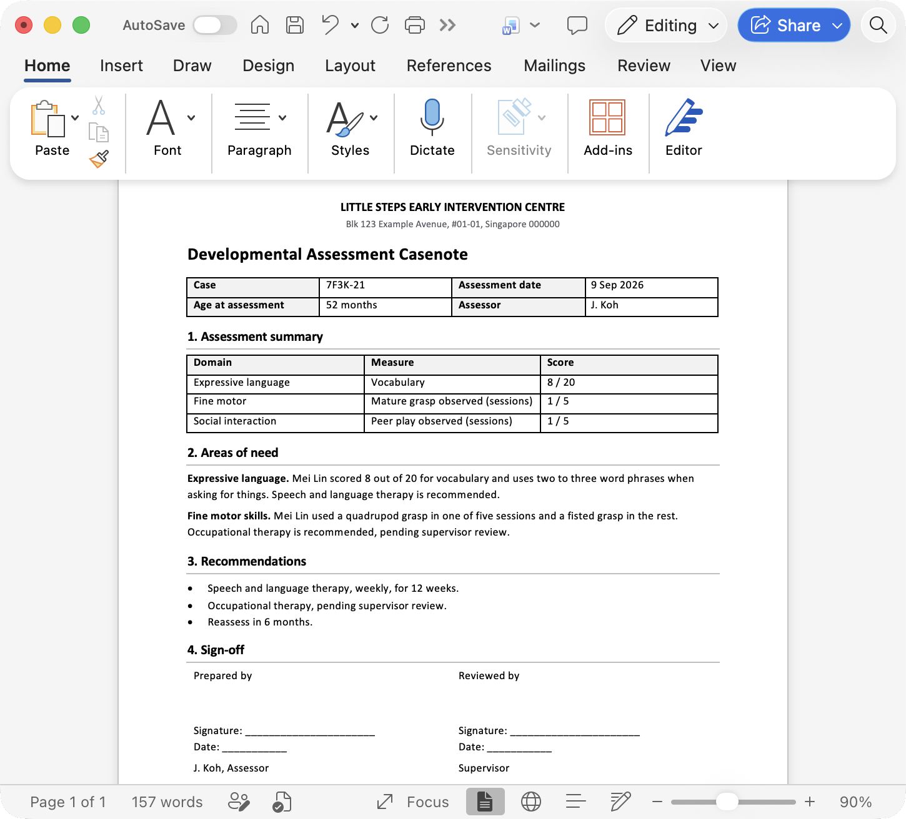

01
In your centre's template
Drafts land in your own Word template, with its headings, tables and signature block intact.

An AI helper for early-intervention assessors.
It drafts casenotes from your assessments, right inside Word and Google Docs.

Open the Assessmate panel in your casenote and attach the assessment sheet and your observation notes.
Assessmate drafts each area of need and cites the score or session behind every sentence.
Check each line, flag anything for your supervisor, and add what you approve to the casenote.
Drafts land in your own Word template, with its headings, tables and signature block intact.

If your notes can't support a finding, Assessmate says so instead of guessing.
Recommendations your centre flags go to your supervisor. The rest go straight into the casenote.
Every approval is kept. If a source file changes, the sections built on it reopen for review.
Expressive language. Mei Lin scored 10 out of 20 for vocabulary1 and uses two to three word phrases when asking for things2.
We're two computing students at NUS. As CCSGP fellows we met early-intervention assessors who are brilliant with kids, and then spend hours writing casenotes by hand. We want that time to go back to the children.

I want to build a better world with AI, and that starts with the people doing the hardest work. I used to harden networks at CSIT, so keeping children's data safe matters to me as much as saving assessors time.
hansheng.devAssessors told me they spend more of their week on casenotes than on children, and I started Assessmate to change that. I build AI every day as an AI engineer and NUS research assistant, so turning it into more time with children is the work I care about most.
pranavpappu.devIt writes a draft. You read every line, change what you need, and only what you approve goes into the casenote.
Every sentence links to the score or session note it came from, so you can check it at a glance. Anything that needs clinical sign-off is flagged for your supervisor.
Names and IDs are removed before the AI sees anything. It works with “Child A”, not the child's name. Built around Singapore's PDPA guidelines .
No. Your case data is never used to train AI models.
Only after your Data Protection Officer signs off. Until then, try it on sample cases.
Microsoft Word, on your computer or online, and Google Docs in your browser.